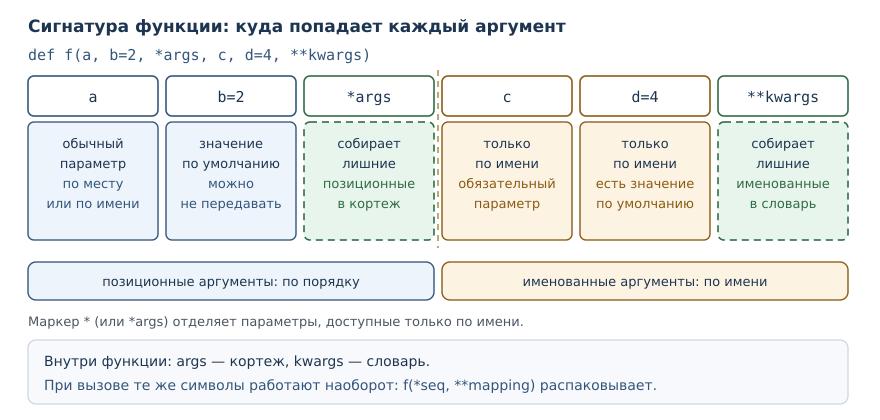

Гибкие сигнатуры: *args, **kwargs и распаковка
Как проектировать универсальные функции, не теряя ясность контракта: сбор аргументов, маркеры / и *, распаковка при вызове.
В этой главе
Функция с неизменным списком параметров удобна, пока все вызовы похожи друг
на друга. Но есть задачи, где число аргументов заранее неизвестно: обёртка,
которая должна передать вызов дальше без потерь; print, принимающий сколько
угодно значений; сборщик адреса с произвольным набором параметров запроса.
Для таких случаев Python позволяет описать параметры, которые забирают «всё
остальное». В этой главе вы научитесь читать и писать подобные сигнатуры,
отличать объявление параметра от распаковки в вызове и ограничивать гибкость
там, где она мешает ловить ошибки.
24.1 Зачем это нужно
Представьте обёртку над функцией: она печатает имя функции, вызывает её с теми же аргументами и возвращает результат. Если у функции два параметра, их можно повторить в обёртке. Если параметров десять или их состав меняется, повторять бессмысленно: обёртка должна принять любые аргументы и передать их дальше без изменений. Именно так устроены декораторы из главы 22.
Вторая причина — интерфейсы с переменным числом однотипных значений. print
принимает любое количество объектов, max тоже. Такой контракт естественно
описывается параметром, который собирает остаток аргументов в одну структуру.
У гибкости есть цена. Функция, принимающая «что угодно», не сообщит, что вы
перепутали имя аргумента: лишнее имя молча попадёт во внутренний словарь.
Поэтому вторая половина главы — о том, как сузить способы вызова. Маркеры /
и * в сигнатуре говорят, какой аргумент передаётся по месту, а какой только
по имени.
24.2 Что вы сможете после этой главы
- читать сигнатуру любой сложности и объяснять, куда попадёт каждый аргумент;
- объявлять параметры
*argsи**kwargsи понимать, какие значения получаются внутри функции; - ограничивать способы передачи аргументов маркерами
/и*; - распаковывать последовательности и словари в момент вызова;
- отличать объявление параметра от распаковки аргументов.
24.3 Сигнатура как контракт
Сигнатура — это описание того, как функцию разрешено вызывать: список её
параметров, их порядок, виды и значения по умолчанию. В обиходе сигнатуру
называют вместе с именем функции, но inspect.signature показывает только
список параметров.
Три способа связи параметра и аргумента вы уже знаете: аргумент может быть позиционным (передаётся по месту), именованным (передаётся по имени параметра) и может отсутствовать, если у параметра есть значение по умолчанию. Вот как выглядит простая сигнатура, если попросить Python показать её:
import inspect
def area(width, height=1):
return width * height
print(inspect.signature(area))
print(area(2, 3))
print(area(2))
print(area(width=2, height=3))
(width, height=1)
6
2
6
inspect.signature возвращает описание сигнатуры; при печати оно выглядит
почти как строка def, только без имени функции и двоеточия. Уже здесь
видно правило: параметр со значением по умолчанию можно не передавать.
Обратите внимание, что area(2) и area(2, 3) дают разные результаты, но
оба вызова корректны.
Когда параметров много, а вызовов ещё больше, сигнатура становится главным документом функции. Человек читает её раньше, чем тело, и строит по ней вызов. Дальше мы расширим набор инструментов, которым описывается контракт.
24.4 Параметр *args: лишние позиционные аргументы
*Параметр args — параметр с одной звёздочкой, который собирает лишние позиционные аргументы в кортеж.
Слово «лишние» здесь ключевое. Обычные параметры получают свои значения по порядку, а всё, что осталось после них, попадает в кортеж:
def total(*numbers):
print("получено:", numbers)
return sum(numbers)
print(total(1, 2, 3))
print(total())
print(total(10))
получено: (1, 2, 3)
6
получено: ()
0
получено: (10,)
10
Разберём вывод. В первом вызове переданы три аргумента, и все три оказались
в кортеже numbers. Во втором вызове аргументов нет вовсе, поэтому кортеж
пуст, а sum от пустой последовательности даёт 0. В третьем вызове
кортеж состоит из одного элемента — обратите внимание на запятую в (10,):
именно она отличает кортеж от простого числа в скобках.
Имя args — соглашение, а не требование языка: параметр можно назвать
numbers, values или как угодно иначе. Значение имеет звёздочка. При этом
внутри функции параметр ведёт себя как обычный кортеж: его нельзя изменить,
но можно перебрать в цикле, взять длину или распаковать.
Обычные параметры должны стоять до *args; сам *args может быть и первым —
пример def total(*numbers) это показывает. После *args нельзя объявить
обычный позиционный параметр: всё, что идёт дальше, доступно только по имени
(об этом — ниже, в разделе о маркерах).
24.5 Параметр **kwargs: лишние именованные аргументы
**Параметр kwargs — параметр с двумя звёздочками, который собирает лишние именованные аргументы в словарь.
def describe(name, **extra):
print("имя:", name)
print("остальное:", extra)
print("ключи по алфавиту:", sorted(extra))
describe("Аня", city="Москва", age=30)
describe("Боря")
имя: Аня
остальное: {'city': 'Москва', 'age': 30}
ключи по алфавиту: ['age', 'city']
имя: Боря
остальное: {}
ключи по алфавиту: []
Здесь name получил значение по месту, а два именованных аргумента попали в
словарь. Порядок ключей в словаре сохраняется в порядке передачи: city
идёт раньше age. Функция sorted возвращает список ключей по алфавиту,
поэтому порядок в последней строке другой — ['age', 'city']. Это полезное
наблюдение: словарь помнит порядок вставки, а сортировка его меняет.
Ключи в **kwargs всегда строки. Если попытаться передать что-то иное,
Python откажется ещё до входа в тело функции, и это защищает от путаницы
между позиционными и именованными аргументами.
24.6 Маркеры / и *: кто как передаётся
Гибкость удобна не всегда. Публичной функции полезно запретить часть способов вызова: например, разрешить передавать число только по месту, чтобы имя параметра можно было потом изменить, не ломая чужие вызовы.
Параметр только для позиционных аргументов — параметр, перечисленный до
маркера /; передать его по имени нельзя.
Параметр только для именованных аргументов — параметр, стоящий после
маркера * или после *args; передать его по месту нельзя.
def percent(number, /, total):
return number / total * 100
print(percent(1, 4))
print(percent(1, total=4))
25.0
25.0
Параметр number стоит до /, поэтому его можно передать только по месту.
Параметр total — обычный, для него допустимы оба способа. Проверим запрет:
def percent(number, /, total):
return number / total * 100
print(percent(number=1, total=4))
TypeError: percent() got some positional-only arguments passed as keyword arguments: 'number'
Сообщение буквально говорит: «функция получила позиционно-только аргументы,
переданные как именованные», и называет виновника. Теперь обратный случай —
маркер * делает параметры именованными:
def format_price(amount, *, currency="руб.", digits=2):
return f"{amount:.{digits}f} {currency}"
print(format_price(1234.5))
print(format_price(1234.5, currency="$", digits=0))
1234.50 руб.
1234 $
Второй вызов передаёт currency и digits по имени, и порядок имён не важен.
Позиционная передача после * запрещена:
def format_price(amount, *, currency="руб."):
return f"{amount} {currency}"
print(format_price(10, "руб."))
TypeError: format_price() takes 1 positional argument but 2 were given
Полная сигнатура собирается из всех видов параметров в строгом порядке:
позиционно-только, обычные, *args, только именованные, **kwargs. Вот
пример, где присутствуют все пять видов:
def f(a, b=2, *args, c, d=4, **kwargs):
print(a, b, args, c, d, kwargs)
f(1, c=3)
f(1, 2, 3, 4, c=5, d=6, e=7)
1 2 () 3 4 {}
1 2 (3, 4) 5 6 {'e': 7}
| Вид параметра | Запись | Как передать | Что внутри |
|---|---|---|---|
| обычный | a |
по месту или по имени | значение |
| только позиционный | a, / |
только по месту | значение |
| только именованный | *, c |
только по имени | значение |
| сбор позиционных | *args |
по месту, сколько угодно | кортеж |
| сбор именованных | **kwargs |
по имени, сколько угодно | словарь |

Порядок в def не случайность, а требование грамматики. Каждый вид отвечает
за свой участок вызова, и Python проверяет вызов именно по этому порядку:
сначала раздаёт значения обычным параметрам, затем складывает остаток в
*args, потом ищет именованные параметры и только после этого наполняет
**kwargs.
24.7 Распаковка аргументов
Распаковка аргументов — передача последовательности как набора
позиционных аргументов (*seq) и словаря как набора именованных (**mapping).
Здесь легко запутаться, потому что символ тот же, а направление обратное. В объявлении звёздочка собирает аргументы в кортеж или словарь; в вызове она их разбирает на отдельные аргументы:
def box(width, height, depth=1):
return width * height * depth
sizes = [2, 3]
params = {"depth": 5}
print(box(*sizes))
print(box(*sizes, **params))
print(box(2, **{"height": 3}))
print(*sizes)
6
30
6
2 3
В первом вызове список из двух элементов превратился в два позиционных
аргумента. Во втором добавился словарь: ключ depth совпал с именем
параметра. Третий вызов смешивает обычный аргумент и распаковку словаря.
Последняя строка показывает, что распаковка работает с любой функцией:
print(*sizes) напечатал два числа через пробел.
Распаковка подчиняется тем же правилам, что и обычная передача, поэтому конфликты видны сразу:
def box(width, height):
return width * height
print(box(2, 3, width=4))
TypeError: box() got multiple values for argument 'width'
Один и тот же параметр получил значение дважды: сначала по месту, потом по имени. Второй типичный случай — нестроковые ключи в словаре:
def box(width, height):
return width * height
print(box(**{1: 2}))
TypeError: keywords must be strings
Распаковка при вызове работает с любым итерируемым объектом, а не только со списком: подойдут кортеж, множество, генератор. Важно лишь, чтобы число элементов совпало с числом свободных позиционных параметров.
24.8 Форвардинг: зачем это на практике
Самое частое применение сборных параметров — передать вызов дальше, не разбирая его на части. Так устроены обёртки, декораторы и функции-посредники:
def add(a, b):
return a + b
def trace(func, *args, **kwargs):
print("вызов:", func.__name__, args, kwargs)
result = func(*args, **kwargs)
print("результат:", result)
return result
print(trace(add, 2, 3))
print(trace(add, a=2, b=3))
вызов: add (2, 3) {}
результат: 5
5
вызов: add () {'a': 2, 'b': 3}
результат: 5
5
Обёртка не знает, как именно вызовут add: по месту или по имени. Она
принимает любые аргументы и возвращает их функции в том же виде. В главе 22
такой приём оформляют декоратором, а functools.wraps сохраняет у обёртки
имя и строку документации исходной функции.
У форвардинга есть тёмная сторона: он скрывает контракт. Функция вида
def handler(*args, **kwargs) принимает любую опечатку в имени аргумента и
не сообщает об ошибке. Если такая функция — часть публичного интерфейса,
читатель не узнает из сигнатуры, что ей нужно передать. Поэтому общее правило
простое: сборные параметры уместны в обёртках и в функциях с действительно
переменным набором значений, а в прикладном коде лучше перечислить параметры
явно.
24.9 Сигнатуры в стандартной библиотеке
Маркеры и сборные параметры — не экзотика для учебных примеров. Функции
стандартной библиотеки описаны так же, и их сигнатуру можно прочитать тем же
inspect.signature:
import inspect
print(inspect.signature(print))
print(inspect.signature(sorted))
print(sorted([3, 1, 2], reverse=True))
(*args, sep=' ', end='\n', file=None, flush=False)
(iterable, /, *, key=None, reverse=False)
[3, 2, 1]
Читаем первую строку: print принимает любое число позиционных аргументов
(*args), а sep, end, file и flush доступны только по имени. Именно
поэтому print("a", "b", sep="-") работает, а print("a", "b", "-") просто
напечатает три значения через пробел — третий аргумент попадёт в *args, а
не в sep.
Вторая строка показывает оба маркера сразу. iterable стоит до /, то есть
передаётся только по месту. key и reverse стоят после *, то есть
доступны только по имени: sorted(data, my_key) вызовет ошибку, а
sorted(data, key=my_key) сработает. У этого решения есть причина: имена
key и reverse читаются как часть смысла, а позиционный порядок легко
перепутать.
| Функция | Что собирает | Что только по имени |
|---|---|---|
print |
все значения для печати | sep, end, file, flush |
sorted |
итерируемое значение | key, reverse |
max |
значения для сравнения | key, default |
Такой стиль проектирования полезен и в своём коде: обязательные данные передаются по месту, настройки — по имени. Читатель сразу видит, что влияет на результат, а что лишь уточняет поведение.
24.10 Типичные ошибки
- Считать, что внутри
*argsлежит список. Там кортеж:numbersнельзя дополнить методомappend, зато можно распаковать и перебрать. - Путать сбор и распаковку.
def f(*args)собирает аргументы, аf(*seq)разбирает последовательность. Один символ, два противоположных действия. - Оставлять
def f(*args, **kwargs)в публичном API. Любая опечатка в имени проходит молча, а документация перестаёт быть обязательной. - Забывать про маркер
*. После него позиционная передача запрещена, и вызовf(10, "руб.")падает, хотя выглядит естественно. - Передавать в
**словарь с нестроковыми ключами. Ключи обязаны быть строками, иначеTypeError: keywords must be strings. - Думать, что значение по умолчанию защищает от изменяемых объектов. Параметр по умолчанию вычисляется один раз при определении функции; эту ловушку мы разбирали в главе 18, и сборные параметры её не отменяют.
24.11 Упражнения
1. Прогноз вывода
Не запуская код, определите, что напечатает программа, и объясните каждый результат:
def f(*args, **kwargs):
return len(args), len(kwargs)
print(f(1, 2, 3))
print(f(a=1))
print(f(1, b=2))
Запишите три строки вывода, затем проверьте себя запуском.
2. Сборка строки с keyword-only параметром
Напишите функцию join_words(*words, sep=" "), которая соединяет слова
разделителем sep и возвращает одну строку. Вызов join_words("a", "b")
должен дать a b, а join_words("a", "b", sep="-") — a-b. Объясните,
почему sep нельзя передать позиционно.
3. Исправление сигнатуры
Программа падает:
def area(width, height):
return width * height
print(area(2, 3, 4))
Объясните причину ошибки и предложите два исправления: одно через *args,
другое через явный третий параметр со значением по умолчанию.
4. Распаковка при вызове
Даны coords = [2, 3] и opts = {"depth": 5}. Есть функция
box(width, height, depth=1), возвращающая произведение трёх аргументов.
Вызовите её так, чтобы получить 30, используя обе распаковки. Сколько
вариантов вызова вы можете предложить?
5. Сумма произвольного числа значений
Напишите функцию sum_all(*numbers), возвращающую сумму всех аргументов.
Проверьте четыре случая: без аргументов, одно значение, целые числа, числа
с дробной частью. Объясните, что вернётся в каждом случае и почему.
6. Смешанная сигнатура
Объявите функцию describe(name, /, *tags, **meta), которая печатает имя,
кортеж меток и словарь дополнительных сведений. Вызовите её так, чтобы имя
было передано по месту, две метки — позиционно, а город — по имени. Какие
вызовы этой функции невозможны?
7. Анализ: чем плоха универсальная функция
Сравните две сигнатуры: def send(*args, **kwargs) и
def send(recipient, text, *, urgent=False). Для каждой ответьте, что
произойдёт при вызове с опечаткой urgentt=True. Подтвердите ответ кодом.
8. Только позиционный параметр
Напишите функцию divide(dividend, divisor, /), возвращающую результат
деления. Убедитесь, что вызов по имени невозможен, и объясните, зачем в
библиотеках объявляют такие параметры.
9. Мини-проект: сборка адреса
Напишите функцию build_url(base, *segments, **query), которая соединяет
базовый адрес и сегменты пути через /, а параметры запроса добавляет через
? и &. Вызов
build_url("https://example.com", "api", "users", page=1, limit=10) должен
дать https://example.com/api/users?page=1&limit=10. Предусмотрите случай
без параметров запроса.
10. Форвардинг с отчётом
Напишите функцию trace(func, *args, **kwargs), которая печатает имя
функции, полученные аргументы, затем вызывает func с теми же аргументами
и печатает результат. Проверьте её на функции умножения двух чисел при
вызове по месту и по имени.
24.12 Проверка понимания
- Чем параметр отличается от аргумента? Приведите пример объявления и пример вызова, где одно и то же слово играет разные роли.
- Какого типа значение получает параметр
*argsвнутри функции? Почему это важно для изменений? - Что делает маркер
/в сигнатуре? А маркер*без имени параметра? - В чём разница между
def f(*args)иf(*values)? Направление действия какого символа меняется? - Почему
f(**{1: 2})завершается ошибкой ещё до выполнения тела функции? - Когда универсальная сигнатура
*args, **kwargsуместна, а когда вредит?
24.13 Что дальше
Сборные параметры и маркеры дают контроль над тем, как вызывают функцию. С этого места начинается переход к объектам: в следующей главе «Объекты и классы» вы увидите, что класс — это тоже способ описать контракт, только вместо списка параметров у него есть атрибуты и методы, а вызов класса создаёт значение нового типа.